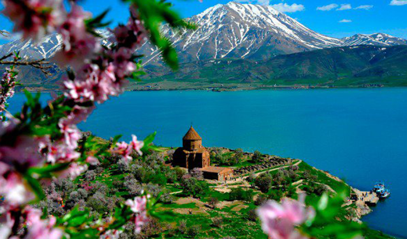
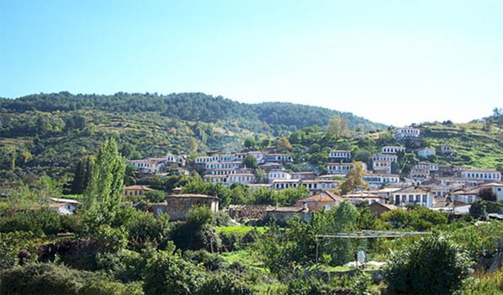

ÜYE OL
GİRİŞ YAP
...
KAPADOKYA
Kapadokya bölgesi, doğa ve tarihin dünyada en güzel bütünleştiği yerdir. Coğrafik olaylar Peribacaları'nı oluştururken, tarihi süreçte, insanlar da, bu peribacalarının içlerine ev, kilise oymuş, bunları fresklerle süsler.
AKDAMAR
Bu harika adanın Van Gölü üzerinde yer alması beraberinde Van Gölü’ne de ayrı bir önem kazandırmaktadır. Çünkü adayı görmek için gelen yabancı turistler aynı zamanda Van Gölü hakkında da bilgi sahibi olabilmektedir.
AMASYA EVLERİ
Bir İç Anadolu şehrinde de sizi şaşırtacak şeyler olabilir. Şehrin merkezinden geçen Yeşilırmak'ın kenarında sıralanan ve geleneksel Osmanlı evinin bütün özelliklerini bünyesinde taşıyan Amasya evleri bu şehri görmek için iyi bir neden.
ŞİRİNCE
İzmir'in Efes harabeleriyle ünlü Selçuk ilçesinin 8 km. doğusunda üzüm bağları, şeftali bahçeleri ve zeytinliklerle çevrili tarihi bir Rum köyü Şirince. Burada yapılan Şirince evleri de 19. yüzyıl Anadolu mimarisini yansıtıyor.


| Misafir İlişkileri | İletişim | Turlar | Online Bilet |
| Kurumsal | Ulaşım | Araç | Gemi Turları |
| Yurt Dışı Turları | Oteller | Kültür Turları | Site Haritası |
Copyright © 2017 GEZegen SEYAHAT ACENTELERİ A.Ş. Tüm hakları saklıdır.